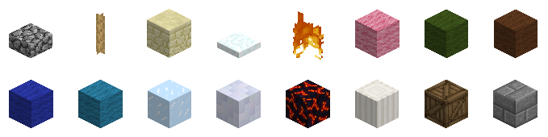

Classic Protocol Extension
Classic Protocol Extension (CPE) is a project to augment the Minecraft Classic network protocol with new and improved functionality.
Extensions are designed to keep extended clients and servers compatible with standard clients and servers. Standard clients and extended clients can play on the same server side-by-side. Extensions are designed to be modular: custom clients and servers can selectively implement any subset of extensions, and only mutually-supported extensions will be used.
| This specification has not yet been finalized, and is subject to change.
Last revision: 19 Nov 2017. Keep an eye on the history subpage for a chronology of changes. |
| Do you have an idea for an extension? Please post it on the Proposals subpage. |
Contents
- 1 Support
- 2 Negotiation
- 3 Extensions
- 3.1 ClickDistance
- 3.2 CustomBlocks
- 3.3 HeldBlock
- 3.4 EmoteFix
- 3.5 TextHotKey
- 3.6 ExtPlayerList
- 3.7 EnvColors
- 3.8 SelectionCuboid
- 3.9 BlockPermissions
- 3.10 ChangeModel
- 3.11 EnvMapAppearance
- 3.12 EnvWeatherType
- 3.13 HackControl
- 3.14 MessageTypes
- 3.15 PlayerClick
- 3.16 LongerMessages
- 3.17 FullCP437
- 3.18 BlockDefinitions
- 3.19 BlockDefinitionsExt
- 3.20 BulkBlockUpdate
- 3.21 TextColors
- 3.22 EnvMapAspect
- 3.23 EntityProperty
- 3.24 ExtEntityPositions
Support
- See support subpage for a detailed table.
Custom servers that already support CPE: FemtoCraft, D3, LegendCraft, GemsCraft, Hypercube, MCSong
Custom servers that plan to add support: 800Craft, cloudBox, fCraft, GGS
Custom clients that already support CPE: ClassiCube Client, ClassicalSharp
Custom clients that plan to add support: Charged Miners, GemsClient
Negotiation
When CPE-capable client connects to a CPE-capable server, a brief negotiation needs to happen before any extensions are used. Client and server declare their capabilities and determine which extensions are mutually supported. All CPE-capable software is required to support this.
{kind=link}
Client behavior: Extended clients must use magic number of 0x42 (66 decimal) for the padding byte of the PlayerIdentification packet. It must then await a response. If server responds with any packet other than ExtInfo, client must assume that the server does NOT support CPE. If the server responds with an ExtInfo packet, client must parse it and any ExtEntry packets that follow. Client must then compare its locally-supported set of extensions with the list of extensions provided by the server, and find an intersection of these sets. These are the mutually-supported extensions. Client must now send ExtInfo packet of its own, followed by a list of zero or more client-supported extensions. After sending the last of ExtEntry packets, client should activate all mutually-supported extensions and resume normal login procedure.
Server behavior: When a client connects, server must read the PlayerIdentification packet and check its padding byte. If this byte is set to 0x42 (66 decimal), assume that the client supports CPE. If this byte is set to any other value, assume that the client does NOT support CPE.
Server must immediately reply to CPE clients with an ExtInfo packet, followed by zero or more ExtEntry packets, and await a response from the client. Client will respond with one ExtInfo and zero or more ExtEntry packets. Server must then compare its locally-supported set of extensions with the list of extensions provided by the client, and find an intersection of these sets. These are the mutually-supported extensions. After receiving the last of ExtEntry packets, server should activate all mutually-supported extensions and resume normal login procedure.
Note 1: All standard/non-extended clients use 0x00 for the padding byte. All standard servers ignore this padding byte. Therefore, this negotiation process does not affect compatibility with standard software.
Note 2: Do not make any assumptions about supported functionality based on the AppName field of ExtInfo packet. It's for logging purposes only.
Note 3: Do not declare support for an extension until it is FULLY implemented, except for debugging.
ExtInfo Packet
Packet ID Field Name Field Type Example Notes 0x10 (16)
AppName string MyServerClient or server software name ExtensionCount short 1 Between 0 and 32767 Total Size: 67 bytes
ExtEntry Packet
Packet ID Field Name Field Type Example Notes 0x11 (17)
ExtName string MyExtensionName of a supported extension Version int 1 Only extensions with identical version numbers should be considered compatible. Total Size: 69 bytes
Extensions
Note: The section heading is the name of the extension. Packet names are not same as extension names. For example, the first extension listed here is named "ClickDistance" and not "SetClickDistance".
| Do you have an idea for an extension? Please post it on the Proposals subpage. |
ClickDistance
- Used to extend or restrict the distance at which client may click blocks, controlled by the server. Click range is given in player-space units (32 units per block). In Minecraft Classic, the default range is 160.
- Motivation: This extension allows trusted players to have a wider or virtually-unlimited reach. It may simplify operation of certain bots. Restricting the reach may allow new games/mini-games.
- Client Behavior: Upon receiving a SetClickDistance packet, client should immediately apply the change. Distance should persist between worlds/maps.
- Server Behavior: Server should send SetClickDistance packet when the server connects, or whenever their permitted click distance changes. Server should allow for some margin-of-error (+/- 1 block) when enforcing click distance restrictions.
SetClickDistance packet
- Server to Client
Packet ID Field Name Field Type Example Notes 0x12 (18)
Distance short 160 Total Size: 3 bytes
CustomBlocks
- Used to add support for custom block types. Custom block IDs start at 50 (0x32). New block types will be added in batches, a few at a time. Both client and server declare which batch they support, and use the lower of the two versions. Claiming to support a batch implies fully implementing all the batches that came before it. If either server or client do not support this extension, only the standard 50 block types should be used.
- Motivation: Adding new visually distinct blocks, to enhance Classic players' experience.
- Client behavior: Client must expect a CustomBlockSupportLevel packet from a compatible server immediately after sending the last ExtEntry packet. It should then reply with its own CustomBlockSupportLevel packet, containing its actual support level. Client must then use the lower of the two levels in operation. Client must not send any block types that are not defined by the current support level. Client should expect ServerIdentification packet only AFTER sending its CustomBlockSupportLevel packet.
- Server behavior: Server must send a CustomBlockSupportLevel packet to compatible clients immediately after receiving the last ExtEntry packet from the client. It should then wait to receive a CustomBlockSupportLevel packet from the client before sending the ServerIdentification packet. Server must then use the lower of the two levels in operation. If this level is lower than the server's, it has to filter data sent to the client, to make sure that the client never receives any block types that it does not support. Each level will define what substitutions to use.
CustomBlockSupportLevel packet
- Server to Client
Packet ID Field Name Field Type Example Notes 0x13 (19)
SupportLevel byte 1 Total Size: 2
Blocks in support level 1
- Client must be able to receive/render all 16 custom blocks to claim support. Server must be able to receive/store all 16 custom blocks to claim support.
- 
{kind=link}
Block name Block ID Fallback name Fallback ID CobblestoneSlab 0x32 (50) Slab 0x2C (44) Rope 0x33 (51) BrownMushroom 0x27 (39) Sandstone 0x34 (52) Sand 0x0C (12) Snow 0x35 (53) Air 0x00 (0) Fire 0x36 (54) Lava 0x0A (10) LightPinkWool 0x37 (55) Pink 0x21 (33) ForestGreenWool 0x38 (56) Green 0x19 (25) BrownWool 0x39 (57) Dirt 0x03 (3) DeepBlue 0x3A (58) Blue 0x1d (29) Turquoise 0x3B (59) Cyan 0x1c (28) Ice 0x3C (60) Glass 0x14 (20) CeramicTile 0x3D (61) Iron 0x2a (42) Magma 0x3E (62) Obsidian 0x31 (49) Pillar 0x3F (63) White 0x24 (36) Crate 0x40 (64) WoodenPlanks 0x05 (5) StoneBrick 0x41 (65) Stone 0x01 (1)
- Block IDs for future support levels are guaranteed to be assigned monotonically, incrementally, and permanently.
HeldBlock
- Provides a way for the client to notify the server about the blocktype that it is currently holding, and for the server to change the currently-held block type.
- Motivation: This allows server to know which block player is holding, for example for drawing commands, without needing to wait for the player's click. It also allows for features like /Spectate to show what block a spectated player is holding.
- Client behavior: When this extension is mutually supported, client should use the PlayerID field of the PositionAndOrientation packet (currently unused) to indicate which blocktype the client is currently holding. It should be ready to accept HoldThis packets to change the block that the player is holding. If
0is given for BlockToHold, client should hide the hand/block from the screen, and should not be able to click blocks, until they switch to a different blocktype. If an unrecognized blocktype is given, no action is needed. - Server behavior: The server can use HoldThis packet to force the client to hold the desired block type. It should be done sparingly.
HoldThis packet
- Server to Client
Packet ID Field Name Field Type Example Notes 0x14 (20)
BlockToHold byte 49Standard block type PreventChange byte 0 0 = Allow player to change blocktype 1 = Prevent player from changing blocktype
Total Size: 3 bytes
EmoteFix
- This extension indicates that the client can render emotes (ASCII control characters) in chat properly, without padding or suffixes that are required for vanilla client. This extension does not define any new packets.
- Motivation: To improve appearance of emotes in chat.
- Client behavior: Client should not emulate vanilla client's quirks.
- Server behavior: Server should not pad or suffix emotes in chat.
TextHotKey
- This extension allows the server to define "hotkeys" for certain commands.
- Motivation: To speed up and simplify access to commonly-used commands and command macros by providing server-defined client-side hotkeys.
- Client behavior: Client should not try to persist previously-defined hotkeys between sessions. When a defined hotkey is activated by the user, client should open up a text prompt and type in contents of the Action field. A newline character (
\n) in the Action field indicates that whatever is currently typed-in should be sent to the server. If Action does not end with a newline, text prompt should be left open, for the user to complete. Client may provide a way for the user to see a list of currently-defined hotkeys, and a way to notify the user when a hotkey was activated. - Server behavior: The server should send a definition of each hotkey (SetTextHotKey packet) once per connection.
SetTextHotKey packet
- Server to Client
Packet ID Field Name Field Type Example Notes 0x15 (21)
Label string CopyReadable name of the hotkey Action string /CopyText to type in KeyCode int 113LWJGL keycode of the key KeyMods byte 0Key modifier flags, may be combined: - 0 = None
- 1 = Ctrl
- 2 = Shift
- 4 = Alt
Total Size: 134 bytes
ExtPlayerList
- Motivation: Provides more flexibility in naming of players and loading of skins, autocompletion, and player tab-list display. Separates tracking of in-game entities (spawned player models) and names on the player list. ExtAddPlayerName/ExtRemovePlayerName packets take over managing the player names list (tab-list), and ExtAddEntity2/DespawnPlayer packets are used only to manage in-game entities.
Version 1 (Deprecated since 28 August 2014)
- This version of the extension has been deprecated and replaced with version 2. See old extensions subpage.
Version 2
Version 2 of this extension replaces ExtAddEntity packet with ExtAddEntity2, allows using full URLs for SkinName, and clarifies interaction with ChangeModel extension.
Client Behavior
- When ExtAddPlayerName packet is received for an unrecognized NameID, a new name must be added to the player-name list. When receiving ExtAddPlayerName packet for an already-listed NameID, client must update its ListName, GroupName, and GroupRank. Player-name list must persist when client changes worlds/maps.
- When an ExtAddEntity2 packet is received, it must be treated as the SpawnPlayer packet. A player model must be spawned in-game at the given location, with InGameName text drawn above it. Skin should be loaded using the given SkinName for a player name. When client receives ExtAddEntity2 packet for an already-spawned player, a duplicate entity must not be spawned and existing entity's position must not be changed. Instead their InGameName and SkinName must be updated. If a negative EntityID is given for ExtAddEntity2, client must update player's own spawn point, InGameName, and SkinName. The client must ignore regular SpawnPlayer packets, if any are received.
- Player entity's skin should be loaded using the given SkinName. If SkinName appears to be a player name, skin should be downloaded from the default skin server. If SkinName appears to be a full URL to a PNG image (starts with
http://orhttps://and ends with.png) then skin should be downloaded from that URL. If image is correctly sized/proportioned to use as a skin for the current model, it should be used. If a blank or unrecognized value is given for SkinName, or if given image could not be downloaded or used, then the default skin should be used.
- Names on the player-name list should be grouped by GroupName in the player-name list. Names within a GroupName should be sorted by GroupRank (in ascending order). Names with the same GroupName and GroupRank should be sorted alphabetically by ListName. Color codes may be either drawn or stripped from ListName, GroupName, and InGameName.
- When a standard DespawnPlayer packet is received for a recognized EntityID, player model must be removed from a world. When ExtRemovePlayerName packet is received for a recognized NameID, their name must be removed from player-name list. Packets with out-of-range or unrecognized NameIDs must be ignored.
- In-game entities must never be affected by ExtAddPlayerName or ExtRemovePlayerName packets. Player name list must never be affected by ExtAddEntity2 or DespawnPlayer packets.
Server Behavior
| Event | Packet to send |
|---|---|
| Player connects to server | ExtAddPlayerName |
| Player enters map | ExtAddEntity2 |
| Player leaves map | DespawnPlayer |
| Player disconnects from server | ExtRemovePlayerName |
- Unique NameID between 0 and 255 should be assigned to every online player. When a new player connects to the server, ExtAddPlayerName must be sent. GroupName and GroupRank can be used in any way, for example to group players by map/world or rank/class/faction. Server must use ExtAddEntity2 in place of standard SpawnPlayer packet. Server should re-send ExtAddPlayerName packet, using the identical NameID, when player's ListName, GroupName, or GroupRank change. Server must reliably send an ExtRemovePlayerName packet when the player disconnects. Color codes are permitted in ListName, GroupName, and InGameName.
ExtAddPlayerName Packet
- Server to Client
Packet ID Field Name Field Type Example Notes 0x16 (22)
NameID short 5Between 0 and 255 PlayerName string NotchPlayer name used for autocompletion. May be left empty (to exclude from autocompletion).
ListName string &c[Op]NotchName displayed in the in-game list. GroupName string StaffMay be left blank. GroupRank byte 0Rank of a player within the group. Lower-number ranks are listed before higher-number ranks.
Total Size: 196 bytes
ExtAddEntity2 Packet
- Server to Client
Packet ID Field Name Field Type Example Notes 0x21 (33)
EntityID byte 5Between 0 and 127 InGameName string &cNotchPlayer name to be shown in-game, hovering above player model. SkinName string NotchPlayer name whose skin should be used by the client. SpawnX short 1X coordinate (32 units per block) of entity's spawn location. SpawnY short 2Y coordinate (32 units per block) of entity's spawn location. SpawnZ short 3Z coordinate (32 units per block) of entity's spawn location. SpawnYaw byte 4Orientation (left-right) at the entity's spawn location. SpawnPitch byte 5Orientation (up-down) at the entity's spawn location. Total Size: 138 bytes
ExtRemovePlayerName Packet
- Server to Client
Packet ID Field Name Field Type Example Notes 0x18 (24)
NameID short 5Between 0 and 255 Matches NameID of the ExtAddPlayerName packet
Total Size: 3 bytes
EnvColors
- This extension allows server to alter some of the colors used by the client in environment rendering.
- Motivation: To allow the server to give worlds/maps a unique feel: time-of-day, weather/climate, lighting effect, etc.
- Client behavior: Client must check for EnvSetColor packets right before LevelFinalize packet, and apply these changes before the map is displayed. Client must be able to read this packet at other times, but it is not required to then apply the changes immediately. If an unrecognized or unsupported Variable field is given, no action is needed. If an out-of-range color is given by the server (i.e. if any of Red, Green, or Blue is less than
0or greater than255), then the specified Variable should be reset to its default value. - Server behavior: Server should normally only use EnvSetColor packets right before the LevelFinalize packet. To reset a variable to its default value, the server should send a packet with value
-1for Red, Green, and Blue.
EnvSetColor Packet
- Server to Client
Packet ID Field Name Field Type Example Notes 0x19 (25)
Variable byte 1Enumeration of environmental variables - 0 = sky color
- 1 = cloud color
- 2 = fog color
- 3 = ambient light (blocks in shadow) color
- 4 = diffuse light (sunlight) color
Red short 25Between 0 and 255 Green short 128Between 0 and 255 Blue short 0Between 0 and 255 Total Size: 8 bytes
SelectionCuboid
- Motivation: Allows the server to highlight parts of a world. Applications include zoning, previewing draw commands, previewing undo commands.
- Coordinates: {StartX,StartY,StartZ} are coordinates of the block inside the selection that is closest to the map origin. {EndX,EndY,EndZ} are coordinates of the block inside the selection that is furthest from the map origin. Therefore, the resulting selection has dimensions {EndX-StartX+1, EndY-StartY+1, EndZ-StartZ+1).
- Client behavior: Client should be ready to receive MakeSelection packets any time after LevelFinalize packet. Upon receiving the packet, a translucent cuboid should appear in the world. The cuboid may feature a plain or "grid" texture. Selections that extend outside the map may be either ignored or clipped to fit. Selections with inconsistent coordinates (e.g. where StartX<EndX) may either be ignored or re-ordered. Out-of-range values for Red, Green, Blue, and Opacity should be clipped to fit the valid range. Supporting Opacity is optional: the client may opt to provide fixed opacity instead. When map changes (i.e. when LevelInitialize packet is received), all existing selections should be removed. RemoveSelection packets that refer to non-existent SelectionIDs should be ignored.
- Server behavior: All given coordinates must be contained within the map. End coordinates should be higher or equal than start coordinates.
MakeSelection packet
- Server to Client
Packet ID Field Name Field Type Example Notes 0x1A (26)
SelectionID byte 0Numeric ID of the selection. Between 0 and 127. Label string SomeZoneText label associated with the selection StartX short 1X coordinate of the starting point StartY short 2Y coordinate of the starting point StartZ short 3Z coordinate of the starting point EndX short 5X coordinate of the ending point EndY short 6Y coordinate of the ending point EndZ short 7Z coordinate of the ending point Red short 255Between 0 and 255. Green short 34Between 0 and 255. Blue short 128Between 0 and 255. Opacity short 2550 = fully transparent 255 = fully opaque
Total Size: 86 bytes
RemoveSelection packet
- Server to Client
Packet ID Field Name Field Type Example Notes 0x1B (27)
SelectionID byte 0Total Size: 2 bytes
BlockPermissions
- This extension allows the server to instruct the player that certain block types are allowed/disallowed to be placed or deleted.
- Motivation: To prevent players from inadvertently placing or removing prohibited block types (e.g. water, lava, grass, admincrete), before it even reaches the server.
- Client behavior: Client should prevent placement of prohibited block types (by graying out or hiding blocks in block-selection screen, or any other effective means). Client should prevent player from deleting prohibited block types. Client must be ready to receive SetBlockPermission packet after map load (LevelFinalize packet). Permission changes should take effect as soon as packet is received. Admincrete (solid block) permissions set by SetBlockPermission must always override permission set by ServerIdentification and UpdateUserType packets. If BlockType is set to
0, the client behaviour is undefined. Permissions must persist between map changes. Client may optionally warn the player attempting to place/delete prohibited blocks via sound effect, visual effect, chat message, etc. - Server behavior: Server may send SetBlockPermission packets any time after map load (LevelFinalize packet). Any valid block ID may be specified for BlockType, including custom blocks (if CustomBlocks extension is mutually supported). Server must not assume that client is compliant/obedient, and server must still verify each SetBlock packet coming from the client. What to do with non-complying clients (kick or warn) is up to you.
SetBlockPermission packet
- Server to Client
Packet ID Field Name Field Type Example Notes 0x1C (28)
BlockType byte 8Block's numeric ID (anything between 1 and max defined block). AllowPlacement byte 00 = Prohibited 1 or any other value = Allowed
AllowDeletion byte 00 = Prohibited 1 or any other value = Allowed
Total Size: 4 bytes
ChangeModel
- Allows changing appearance of player models in supporting clients.
Client Behavior
- The client will receive an EntityID and a string value containing the model name. The client will then change the model of the player whose ID is the same as the received AddEntity, ExtAddEntity, or ExtAddEntity2 packet. The model name will be parsed by the model manager and the model changed in game. If the model does not exists in the model manager or is 0-length, change the model back to humanoid. Alternatively, you can send the client an int converted to a string which represents a valid Block ID. An EntityID of -1 (255 unsigned) indicates the player's own model. If model is set to
humanoid, player-specific skin should be used. For all other models, default model-specific textures should be used.
Server Behavior
- The server may send an EntityID and then a ModelName to the client for a desired entity. The model name must be chosen from the list below. To reset the model to default, server should set ModelName to
humanoidor to an empty string.
Interaction with ExtPlayerList
- If an ExtAddEntity2 packet is received for a non-
humanoidentity and SkinName specifies a full URL, that image should be downloaded and used as a texture for the currently model. Receiving another ExtAddEntity2 packet should either update this texture (if SkinName is a full URL) or reset it back to default (if SkinName is anything else). Receiving another ChangeModel packet with a non-humanoidModelName should reset texture back to model-specific default.
ChangeModel Packet
Packet ID Field Name Field Type Example Notes 0x1D (29)
EntityID byte 5 Between 0 and 127. ModelName string spiderThe name of the model to be used OR a valid Block ID as a string. Total Size: 66 bytes
Available models
- Client can render any or none of the below, but it is down to the client to handle what can and cannot be rendered if the packet is received
Model Name Model String Chicken chickenBlock Model A valid block ID as a string Creeper creeperCrocodile crocHumanoid humanoid(or an invalid model name)Pig pigPrinter printerSheep sheepSkeleton Archer skeletonSpider spiderZombie zombieHead headSitting sittingChibi chibi
EnvMapAppearance
- This extension allows the server to specify custom terrain textures, and tweak appearance of map edges.
- Motivation: To provide more ways to customize map appearance, including functionality that's currently provided by World of Minecraft's scheme.
Version 1 (Deprecated since 9 May 2016)
- This version of the extension has been deprecated and replaced with version 2. See old extensions subpage.
Version 2 (Deprecated since 21 June 2017)
- This version of the extension has been deprecated and replaced with EnvMapAspect. See old extensions subpage.
EnvWeatherType
- This extension allows the server to trigger special weather conditions (like rain and snow) on demand.
- Motivation: To allow the server to give worlds/maps a unique feel with weather effects, e.g. for adventure maps.
- Client behavior: Client must be able to receive EnvWeather packets at any time after the first LevelDataChunk packet is received, and apply these changes immediately. If an unrecognized or unsupported WeatherType field is given, no action is needed.
- Server behavior: Server may send EnvSetColor packets to connected clients at any time after the first LevelDataChunk packet is sent.
EnvSetWeatherType Packet
- Server to Client
Packet ID Field Name Field Type Example Notes 0x1F (31)
WeatherType byte 1Enumeration of weather types - 0 = sunny
- 1 = raining
- 2 = snowing
Total Size: 2 bytes
HackControl
- This extension allows the server to control cheats/hacks in the client.
- Motivation: To allow fine-grained control over cheats/hacks on multi-world servers.
- Client behavior: Client must be able to receive HackControl packets at any time after the first LevelDataChunk packet is received, and apply these changes immediately. Unrecognized or unsupported values for any field should be ignored. Clients may approximate JumpHeight by rounding down to the nearest half-block (i.e. nearest multiple of 16), if needed. If a negative value is given for JumpHeight, client should reset jump height to its default setting (around
40in vanilla Minecraft). - Server behavior: Server may send HackControl packets to connected clients at any time after the first LevelDataChunk packet is sent.
HackControl Packet
- Server to Client
Packet ID Field Name Field Type Example Notes 0x20 (32)
Flying byte 0- 0 = Prevent player from flying
- 1 = Allow flying
NoClip byte 0- 0 = Prevent player from no-clipping (passing through solid blocks)
- 1 = Allow no-clipping
Speeding byte 0- 0 = Only allow normal walking speed.
- 1 = Allow moving at any speeds.
SpawnControl byte 1- 0 = Prevent player from pressing [R] to respawn, or using [Enter] to change spawn.
- 1 = Allow player to respawn / change spawn.
ThirdPersonView byte 1- 0 = Disallow third-person view (only first-person view allowed).
- 1 = Allow third-person view.
JumpHeight short 40Maximum height, in terms of player movement units (1/32nds of a block), to which the player is allowed to jump. Negative value (e.g.
-1) means that the client should use its default jump height.Total Size: 8 bytes
MessageTypes
{kind=link}
- This extension adds new ways of presenting messages in the client.
- Motivation: To enhance the display of announcements and status information, and to reduce chat clutter.
- Client behavior: When this extension is mutually supported, the PlayerID field of the standard server-to-client Message packet should be treated as a MessageType code. Unrecognized or unsupported codes may be ignored (in which case the message should be presented as a regular chat message). When connected to non-supporting servers, this field should be ignored.
- Server behavior: Server may use the PlayerID field of the Message packet to set a MessageType. For non-supporting clients, this field should always be set to
0.
MessageType Meaning Suggested Implementation 0Chat Normal message, shown in the chat area. 1Status1 Shown persistently in the top-right corner of the screen, in regular font. 2Status2 Shown persistently just below Status1 3Status3 Shown persistently just below Status2 11BottomRight1 Shown persistently in the bottom-right corner of the screen, in regular font. 12BottomRight2 Shown persistently just above BottomRight1 13BottomRight3 Shown persistently just above BottomRight2 100Announcement Pops up in larger font near the top-center of the screen. Fades out after a few seconds.
- This extension does not define any new packets.
PlayerClick
- This extension lets the server receive details of every mouse click a player makes, including targeting information.
- Motivation: To allow for the creation of more interactive maps: interactive buttons, cannons, ability to "tag" or "shoot" other players, ability to drag-to-draw at a distance, etc.
- Client Behavior: When this extension is mutually supported, a PlayerClicked packet should be sent to the server, as soon as reasonably possible, every time the user presses or releases a mouse button. Mouse interactions that happen while player is interacting with chat, with GUI menus, or with any other application must NOT be sent. A matching "released" event must be sent for every "pressed" event.
- High resolution up-to-date Yaw and Pitch for the player should be transmitted with every packet. If player is currently targeting another entity/player TargetEntityID fields should be set. If player is currently targeting a block (within permitted ClickDistance) TargetBlockX, TargetBlockY, TargetBlockZ, and TargetBlockFace should be set. An out-of-range value should be used for these fields when they are not in use. These packets should not be sent during level transitions (after receiving LevelInitialize and until receiving LevelFinalize packets).
- Server Behavior: Server must be ready to accept any number of PlayerClicked packets at any time after level sending has completed. What to do with this information is entirely up to the server.
PlayerClicked packet
- Client to Server
Packet ID Field Name Field Type Example Notes 0x22 (34)
Button byte 0 0 = Left click, 1 = Right Click, 2 = Middle click Action byte 0 0 = Pressed, 1 = Released Yaw short 0 Yaw (heading) of the player. Same function as Yaw field of PositionAndOrientation packet, but with more precision.
Pitch short 0 Pitch (head angle) of the player. Same function as Pitch field of PositionAndOrientation packet, but with more precision.
TargetEntityID byte 0 ID of an entity currently targeted by the player, between 0 and 127. Any out-of-range value means "no entity is targeted."
TargetBlockX short 64 X coordinate of a targeted block, between 0 and 2048. Any out-of-range value for any of the coordinates means "no block is targeted."
TargetBlockY short 64 Y coordinate of a targeted block, between 0 and 2048. TargetBlockZ short 64 Z coordinate of a targeted block, between 0 and 2048. TargetBlockFace byte 1 Index of the block face that the player is targeting. Block faces are numbered as follows: 0. Away from X-origin
1. Towards X-origin
2. Away from Y-origin (up)
3. Towards Y-origin (down)
4. Away from Z-origin
5. Towards Z-origin
Any out-of-range value for TargetBlockFace mean "no block is targeted."
Total Size: 15 bytes
LongerMessages
- This extension allows clients to accept messages longer than 64 characters, and send them to the server in parts.
- Motivation: To allow players to write longer messages!
- Client Behavior: When a regular-length message is sent, a single Message packet is sent, with the unused PlayerID (aka MessageType) byte set to
0. When an extra-long message is sent, multiple Message packets are sent. All packets except the last one should have the unused byte set to1, meaning "this message continues in the next Message packet". - Server Behavior: Server should check the unused PlayerID (aka MessageType) byte of every incoming Message packet. If the value is non-zero, it should treat it as a partial message. Partial messages should be stored and prepended to the next message received from this player, until a message with a
0byte is received. Server should preserve leading and trailing whitespace in message packets with a1byte. Server should preserve leading whitespace, but trim trailing whitespace from the last packet of a partial message.
- No new packets are defined, but treatment of Message packet is altered.
FullCP437
- This extension allows players to send and receive chat with all characters in code page 437, rather than just the 0 to 127 characters.
- Motivation: To allow players to use more characters for different purposes.
- Client Behavior: When a message packet is received, clients must treat all characters in that message as unsigned bytes that represent indices into code page 437. Clients may optionally provide a way of directly entering code page 437 characters into chat.
- Server Behavior: Servers must support being able to send and receive chat message packets which include unsigned byte values ranging from 0 to 255. Servers must also provide a fallback mechanism for converting unsigned bytes in the 128-255 range into the 0 to 127 range for clients that do not support this extension. (e.g converting all unsigned bytes in the 128 to 255 range to a '?' symbol)
Note: Ideally, servers should also provide some method of escaping that allows users to enter a token that is then converted into a code page 437 index, but that is not required to claim support for this extension.
As an example of an escaping mechanism, when "{infinity}" is entered by the player, it becomes a single unsigned byte with a value of '236' after being processed by the server. When the chat message packet is later received by the client, it renders the unsigned byte with the value of '236' as ∞.
BlockDefinitions
- This extension allows servers to define new block types with custom IDs and appearance, as well as the ability to redefine the properties of standard block types.
- Motivation: To allow defining block types without client modifications. To make full use of custom textures.
- Client Behavior: This extension depends on EnvMapAppearance extension, and must only be enabled if BOTH extensions are mutually supported. Client should be able receive any number of DefineBlock and RemoveBlockDefinition packets during the level loading process (after receiving LevelInitialize and until receiving LevelFinalize packets). However, dependent on client, this can be sent after level loading (Some clients might just find it more extensible than others). Client must keep track of all defined blocks between level changes or until they are individually removed with RemoveBlockDefinition.
- Client must be able to accept and render blocks as specified in DefineBlock packets. Clients must accept any valid definitions with BlockID between 1 and 254, inclusive. If a new definition is accepted for an already-defined BlockID, the old definition should be replaced. If RemoveBlockDefinition is received for a non-defined BlockID, it should be ignored.
- Texturing: New textures are defined by altering
terrain.pngand specifying it with EnvSetMapAppearance packet. DefineBlock fields TopTextureID, SideTextureID, and BottomTextureID refer to a tile number withinterrain.png. Tiles are numbered 0 (top-left corner) through 255 (bottom-right corner), increasing left-to-right within each row. Refer to this image for a list of standard tiles, and a graphical list of tile indices.
{kind=link}
- Server Behavior: Server may send any number of DefineBlock packets when client expects it. Server should only use IDs of currently-defined blocks in block data sent in LevelDataChunk packets, SetBlock packets, or any other packets that expect block IDs.
- Compatibility: For non-supporting clients, the server must convert custom block ids into fallback block ids (e.g. 'lamp' fallbacks to lava) that lie within the client's set of supported blocks. (TODO: Define how the client should store map files with block definitions. Maybe integrate this with ClassicWorld definition?) 0 is not allowed to be redefined, nor is 255, as 255 is typically used by servers to indicate 'outside map bounds'. Note that sending a RemoveBlockDefinition packet for a standard tile id is not defined, and may lead to undesired consequences.
DefineBlock Packet
- Server to Client
Packet ID Field Name Field Type Example Notes 0x23 (35)
BlockID byte 128Between 1 and 254 (unsigned). Name String CactusShort, unique, player-friendly name for the block. Solidity byte 1Specified collision mode for this block type. Blocks may be walk-through (0), swim-through (1), or solid (2).
- Walk-through blocks do not collide with the player, and do not interfere with jumping. Players fall through these blocks.
- Swim-through blocks allow the player to descend or ascend slowly (at WalkSpeed), as if they were swimming.
- Solid blocks collide with the player. Players may walk on these.
MovementSpeed byte 1Player movement speed modifier, defined relative to regular walk speed. Ratio to normal speed is computed with this formula: y = 2(x-128)/64 Thus a value of
0translates to 0.25 ratio (25% speed),128to 1.00 ratio (100% speed), and255to 3.96 (396% speed).- If Solidity is set to 0 or 1, speed is modified while player is inside (i.e. colliding with) the block.
- If Solidity is set to 2, speed is modified while player is standing on the block.
If player is affected by several tiles, the lowest of all modifiers is used.
TopTextureID byte 1Refers to a terrain.pngtile.Between 0 and 255 (unsigned). Can be same as other texture IDs.
SideTextureID byte 2Refers to a terrain.pngtile.Between 0 and 255 (unsigned). Can be same as other texture IDs. This is also the texture ID used for drawing sprite blocks (i.e. when Shape is 0).
BottomTextureID byte 3Refers to a terrain.pngtile.Between 0 and 255 (unsigned). Can be same as other texture IDs.
TransmitsLight byte 0Whether this block allows the sunlight to go through, for level-lighting purposes. WalkSound byte 0ID of a sound that client may play when player "steps" on, "walks" through, or "swims" through this tile. 0 = no sound, 1 = wood, 2 = gravel, 3 = grass, 4 = stone, 5 = metal, 6 = glass, 7 = wool, 8 = sand, 9 = snow.
FullBright byte 0Whether or not the block/liquid is affected by shadows (such as lava). - 0 = Affected (darkened when in shadow)
- 1 = Not affected (always bright).
Shape byte 0Shape of the block model: - Sprite = 0,
- Cube with height = 1-16
(e.g. slab would have a shape of '8', snow would have '2', dirt would have '16')
BlockDraw byte 0Can be: - 0 = fully opaque
- 1 = transparent (e.g. like glass)
- 2 = transparent but with no face culling of same neighbours (e.g. like leaves)
- 3 = translucent, where texture's alpha is blended (e.g. like ice or water)
- 4 = gas (e.g. like air)
FogDensity byte 0Density of fog while client's camera is inside this block. Value of
0means "do not change fog" -- level's default settings are used. Values between 1 and 255 are mapped to OpenGL's GL_FOG_DENSITY value for GL_EXP2 style fog with the following formula:GL_FOG_DENSITY = (x+1)/128
Thus value of
1means density of ~0.0156, value of127means 1.0000, and255means 2.0000FogR byte 255Red component of the aforementioned fog. Only applies if FogDensity is above 0.FogG byte 255Green component of the aforementioned fog. Only applies if FogDensity is above 0.FogB byte 255Blue component of the aforementioned fog. Only applies if FogDensity is above 0.Total Size: 80 bytes
RemoveBlockDefinition Packet
- Server to Client
Packet ID Field Name Field Type Example Notes 0x24 (36)
BlockID byte 128Between 128 and 255 Total Size: 2 bytes
BlockDefinitionsExt
- This extension allows servers to define new block types with custom IDs and appearance, as well as the ability to redefine the properties of standard block types.
- Motivation: To allow defining custom block types that do not have minX/Y/Z values of 0, and maxX/Z values of 1.
- Client Behavior: See the BlockDefinitions specification. Additionally, this extension depends on EnvMapAppearance extension and BlockDefinitions, and must only be enabled if BOTH extensions are mutually supported.
Version 1 (Deprecated since 9 May 2016)
- This version of the extension has been deprecated and replaced with version 2. See old extensions subpage.
Version 2
- Texturing: See the BlockDefinitions specification. The MinX/Y/Z and MaxX/Y/Z fields also affect the location within the terrain tile for a given face that the block should sample texels from. (e.g. if minX and minZ was 8, and maxX and maxZ was 16, then for the terrain.png tile with pixels from (0, 0) to (16, 16), the top face would be drawn with the subset of pixels from (8, 8) to (16, 16))
- Server Behavior: See the BlockDefinitions specification.
This packet is the same as DefineBlock packet, except the 'shape field' is replaced by 6 fields indicating the bounding box of the block in pixel coordinates, and the 'side texture' is replaced by 4 fields indicating the individual textures for each horizontal side face.
Note that this packet does not support sprites, you must send a regular DefineBlock packet for that.
DefineBlockExt Packet
- Server to Client
Packet ID Field Name Field Type Example Notes 0x25 (37)
Following fields from DefineBlock packet: BlockID, Name, Solidity, MovementSpeed, TopTextureID LeftTextureId byte 0Refers to a terrain.png tile. Between 0 and 255 (unsigned). Can be same as other texture IDs. This is the texture ID for the X = 0 face.
RightTextureId byte 0Refers to a terrain.png tile. Between 0 and 255 (unsigned). Can be same as other texture IDs. This is the texture ID for the X = 1 face.
FrontTextureId byte 0Refers to a terrain.png tile. Between 0 and 255 (unsigned). Can be same as other texture IDs. This is the texture ID for the Z = 0 face.
BackTextureId byte 0Refers to a terrain.png tile. Between 0 and 255 (unsigned). Can be same as other texture IDs. This is the texture ID for the Z = 1 face.
Following fields from DefineBlock packet: BottomTextureID, TransmitsLight, WalkSound, FullBright MinX byte 0Minimum X coordinate in pixels. Min allowed is 0, max allowed is 15. MinY byte 0Minimum Y coordinate in pixels. Min allowed is 0, max allowed is 15. MinZ byte 0Minimum Z coordinate in pixels. Min allowed is 0, max allowed is 15. MaxX byte 16Maximum X coordinate in pixels. Min allowed is 1, max allowed is 16. MaxY byte 16Maximum Y coordinate in pixels. Min allowed is 1, max allowed is 16. MaxZ byte 16Maximum Z coordinate in pixels. Min allowed is 1, max allowed is 16. Following fields from DefineBlock packet: BlockDraw, FogDensity, FogR, FogG, FogB Total Size: 88 bytes
BulkBlockUpdate
- Allows servers to send a single optimised packet that contains 256 block updates.
- Motivation: Reduce bandwidth usage and increase responsiveness to clients during times of heavy block updates, e.g. for large cuboids or lava survival servers.
- Client Behavior: When this extension is mutually supported, treat the packet in the same manner as a list of up to 256 SetBlock packets.
- Server Behavior: When this extension is mutually supported, server may send BlockBulkUpdate packets to the client after the LevelFinalize packet for the current level has been sent to the client.
BulkBlockUpdate packet
- Server to Client
Packet ID Field Name Field Type Example Notes 0x26 (38)
Count unsigned byte 0The number of block updates used in this packet - 1. (e.g. a value of 0 means 1 block update is used). Indices byte array[1024] [52, 3443] A packed list of the indices within the current level of the blocks that are to be updated. Each element is a 32 bit integer in big endian order.
Blocks byte array[256] [5, 10] A packed list of the new blocks to set at each corresponding index in the indices array. Total Size: 1282 bytes
TextColors
- This extension allows the server to define custom text colors.
- Motivation: To allow parts of chat to be more distinctive, allow for more colorful chat, etc.
- Client Behavior: Client must be able to receive SetTextColor packets at any time. Client must then draw text using the color specified in the packet, when the color code specified by the packet is encountered in any Message packet.
- An alpha/opacity of 0 is treated as removing the custom colour code from the client's list of custom color codes.
- Server Behavior: Server may send SetTextColor packets at any time.
- Compatibility: Clients may choose to always draw text fully opaque, even if the custom text colour specifies a non fully-opaque color. These clients shall still be considered as compliant with the specification.
- For maximum compatibility, it is recommended that the color code in the SetTextColor be greater than 0x20(space) and less than 0x7F(delete). The color code must not be '&', '%', ' ', or '\0'.
- Clients may support overriding /replacing the standard hex color codes, when the code in the range 0-9, a-f, or A-F.
SetTextColor packet
- Server to client
Packet ID Field Name Field Type Example Notes 0x27 (39)
Red unsigned byte 255Red component of the text color. Green unsigned byte 0Green component of the text color. Blue unsigned byte 127Blue component of the text color. Alpha unsigned byte 255Alpha/Opacity of the text colour, with 255 being fully opaque. Code unsigned byte 63ASCII character colour code, case sensitive. Total Size: 6 bytes
Example: Suppose the server sends a SetTextColor packet of color #123456 and color code 'G'. When the client receives a Message packet with the text &fFoo&GBar, Foo is drawn using the color #FFFFFF and Bar is drawn using the color #123456.
EnvMapAspect
- This extension allows the server to specify custom texture packs, and tweak appearance of a map.
- Client behavior: Client must be able to receive SetMapEnvUrl and SetMapEnvProperty packets at any time after the LevelInitalise packet is received for a level. If the TexturePackURL field in a SetMapEnvUrl packet is blank or if the given file could not be loaded for any reason, then the texture pack should be reset to the client's default. If an unsupported block ID is given for SideBlock or EdgeBlock, it should be ignored. Client should keep using the texture pack for future maps, unless specified otherwise by the server.
- Server behavior: Server may send SetMapEnvUrl and SetMapEnvProperty packets after the LevelInitalise packet is sent for a level. Server should not use any custom block IDs unless the client declared the appropriate CustomBlocks support level. To reset the texture pack to the client's default one, server should send an SetMapEnvUrl packet with empty string for TexturePackURL. To reset other properties, server should simply use the default values (listed below).
- Block type restrictions: Only solid blocks are allowed to be used for SideBlock and EdgeBlock properties. Sprites (Sapling, Dandelion, Rose, BrownMushroom, RedMushroom, Rope, Fire) partial-height blocks (Slab, CobblestoneSlab, Snow), and transparent blocks (Air, Leaves, Glass) cannot be used for those fields.
SetMapEnvUrl packet
- Server to Client
Packet ID Field Name Field Type Example Notes 0x28 (40)
TexturePackURL string http://example.com/mypack.zipTexture pack's full URL. Must be a HTTP/HTTPS URL, in .zip format, and served with
application/zipmime type. If a .png is instead served, this is assumed to represent a terrain.png image.Total Size: 65 bytes
Texture pack .zip format
- Note: It is up to clients which files (except for terrain.png) they support in a texture pack. These clients are still considered to be compliant with the specification.
- Note: Texture packs may also contain other files not listed below. If clients recognise these other files, then they may perform whatever is desired with them.
- Note: If a texture pack does not contain a certain texture, clients should continue to use the existing texture from the previous texture pack.
File name Details terrain.png Texture atlas that contains the textures that are applied to blocks. Note: Clients must support this texture to be considered compliant with the specification.
animations.png Texture atlas that contains the textures used for animations. animations.txt File that specifies how the textures in animations.png should be applied to the terrain.png texture atlas. char.png Default skin for humanoid models. clouds.png Texture applied to clouds rendered by the client. The following may be utilised by clients if EnvWeatherType is mutually supported: rain.png Texture applied to rain rendered by the client. snow.png Texture applied to snow rendered by the client. The following may be utilised by clients if ChangeModel is mutually supported: Note: The default texture for humanoid models is specified by char.png. Block models use textures from terrain.png.
x.png Default texture applied to a model for model string x. For example, the Crocodile model has the model string croc. The default texture that would be applied is specified by croc.png.
animations.txt format
Each line is in the format: <TileX> <TileY> <FrameX> <FrameY> <Frame size> <Frames count> <Tick delay> - - TileX and TileY indicate the coordinates of the tile in terrain.png that will be replaced by the animation frames. These range from 0 to 15. (inclusive of 15)
- - FrameX and FrameY indicates the pixel coordinates of the first animation frame in animations.png. The top left pixel coordinate is (0, 0)
- - Frame size indicates the size in pixels of an animation frame.
- - Frames count indicates the number of used frames. The first frame is located at (FrameX, FrameY), second frame at (FrameX + FrameSize, FrameY) and so forth.
- - Tick delay is the number of ticks a frame doesn't change. For instance, a value of 0 means that the frame would be changed every tick, while a value of 2 would mean 'replace with frame 1, don't change frame, don't change frame, replace with frame 2'.
SetMapEnvProperty packet
- Server to Client
Packet ID Field Name Field Type Example Notes 0x29 (41)
Property type byte 0Enumeration of properties that can be changed - 0 = Value is map sides block ID. Default value is 7 (Admincrete).
- 1 = Value is map edge/horizon block ID. Default value is 8 (Water).
- 2 = Value is map edge height. Default value is
MapDepth/2. - 3 = Value is map clouds height. Default value is
MapDepth + 2. - 4 = Value is max fog/view distance. Default is 0. (Client has no limit on maximum view distance.)
- 5 = Value is clouds speed * 256 (so divide value by 256 to get speed). Default is 256.
- 6 = Value is weather speed * 256. Default is 256.
- 7 = Value is weather fade * 128. Default is 128.
- 8 = Value is use exponential fog (any value other than 0 means use it). Default is 0.
- 9 = Value is offset of map sides height from map edge height. Default is -2.
Property value int 45 New value for the given property. Total Size: 6 bytes
EntityProperty
- Allows servers to change the properties of entities, beyond changing their position and yaw/pitch.
- Motivation: Allow for greater customisation, while also allowing for extension to more properties in the future.
- Client Behavior: Client must be able to receive SetEntityProperty packets after the LevelFinalize packet for the current level has been received from the server.
- Server Behavior: Server may send SetEntityProperty packets to the client after the LevelFinalize packet for the current level has been sent to the client.
SetEntityProperty packet
- Server to Client
Packet ID Field Name Field Type Example Notes 0x2A (42)
EntityID byte 0Between 0 and 127 Property type byte 0Enumeration of properties that can be changed - 0 = Model X rotation in degrees
- 1 = Model Y (yaw) rotation in degrees
- 2 = Model Z rotation in degrees
Property value int 45 New value for the given property. Total Size: 7 bytes
ExtEntityPositions
- Expands entity positions from the range of [-1023, 1023] to [-6,7108,864, 67,108,864]
- Motivation: Allows for players to interact and see other players properly on very large/tall/long worlds.
- Client Behavior: Client must read 32 instead of 16 bit integers for the AddEntity, EntityTeleport, ExtAddEntity2 packets. It must write 32 instead of 16 bit integers for the Position and Orientation packet sent to the server.
- Server Behavior: Server must write 32 instead of 16 bit integers for the AddEntity, EntityTeleport, ExtAddEntity2 packets. It must read 32 instead of 16 bit integers for the Position and Orientation packet received from the client.
Note: No new packets are defined by this extension, instead, the reading and writing behaviour of existing packets is modified. The behaviour change only applies to the X, Y, Z fields of the aforementioned packets.